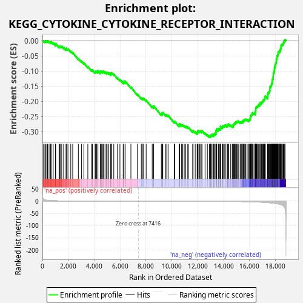
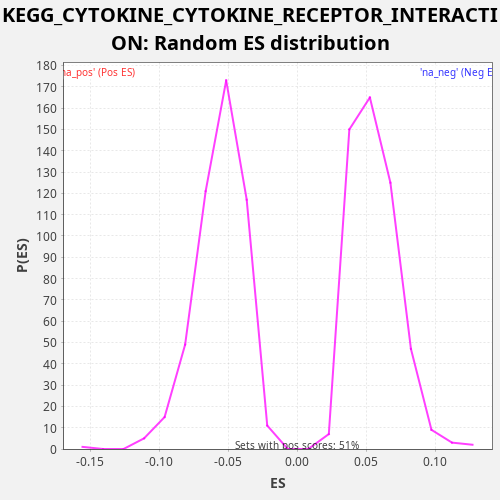

| Dataset | TCGA |
| Phenotype | NoPhenotypeAvailable |
| Upregulated in class | na_neg |
| GeneSet | KEGG_CYTOKINE_CYTOKINE_RECEPTOR_INTERACTION |
| Enrichment Score (ES) | -0.31872338 |
| Normalized Enrichment Score (NES) | -5.658946 |
| Nominal p-value | 0.0 |
| FDR q-value | 0.0 |
| FWER p-Value | 0.0 |

| SYMBOL | RANK IN GENE LIST | RANK METRIC SCORE | RUNNING ES | CORE ENRICHMENT | |
|---|---|---|---|---|---|
| 1 | VEGFA | 85 | 7.590 | -0.0005 | No |
| 2 | TNFRSF21 | 193 | 4.791 | -0.0022 | No |
| 3 | ACVR2A | 239 | 4.276 | -0.0005 | No |
| 4 | IFNE | 339 | 3.405 | -0.0018 | No |
| 5 | IL9R | 401 | 3.107 | -0.0010 | No |
| 6 | TNFRSF14 | 513 | 2.611 | -0.0029 | No |
| 7 | TNFRSF10B | 631 | 2.157 | -0.0051 | No |
| 8 | CTF1 | 674 | 2.016 | -0.0033 | No |
| 9 | IL20RA | 832 | 1.638 | -0.0076 | No |
| 10 | TNFRSF1A | 1009 | 1.340 | -0.0130 | No |
| 11 | CXCR2 | 1022 | 1.319 | -0.0096 | No |
| 12 | TNFRSF25 | 1285 | 0.974 | -0.0196 | No |
| 13 | CD40 | 1345 | 0.925 | -0.0187 | No |
| 14 | EDA | 1409 | 0.883 | -0.0180 | No |
| 15 | BMP7 | 1492 | 0.818 | -0.0184 | No |
| 16 | IFNA13 | 1639 | 0.709 | -0.0221 | No |
| 17 | IFNA1 | 1823 | 0.613 | -0.0279 | No |
| 18 | ACVR1B | 1853 | 0.601 | -0.0254 | No |
| 19 | IL4R | 1972 | 0.546 | -0.0277 | No |
| 20 | FLT1 | 2191 | 0.454 | -0.0353 | No |
| 21 | IFNGR2 | 2340 | 0.408 | -0.0392 | No |
| 22 | PPBP | 2777 | 0.279 | -0.0586 | No |
| 23 | TNFSF13 | 3015 | 0.231 | -0.0673 | No |
| 24 | TGFB1 | 3202 | 0.201 | -0.0732 | No |
| 25 | IFNB1 | 3508 | 0.155 | -0.0855 | No |
| 26 | IFNLR1 | 3790 | 0.122 | -0.0966 | No |
| 27 | IFNGR1 | 3861 | 0.116 | -0.0963 | No |
| 28 | IL7 | 4067 | 0.096 | -0.1032 | No |
| 29 | LTBR | 4104 | 0.093 | -0.1011 | No |
| 30 | LEP | 4189 | 0.087 | -0.1015 | No |
| 31 | IL10RB | 4282 | 0.080 | -0.1024 | No |
| 32 | IL19 | 4290 | 0.080 | -0.0987 | No |
| 33 | IL5 | 4476 | 0.067 | -0.1046 | No |
| 34 | BMPR2 | 4485 | 0.066 | -0.1009 | No |
| 35 | EDA2R | 4552 | 0.062 | -0.1004 | No |
| 36 | CNTFR | 4663 | 0.055 | -0.1022 | No |
| 37 | KIT | 4706 | 0.053 | -0.1004 | No |
| 38 | EPOR | 4836 | 0.045 | -0.1033 | No |
| 39 | EGF | 4957 | 0.040 | -0.1057 | No |
| 40 | IL20RB | 4996 | 0.038 | -0.1036 | No |
| 41 | CXCL8 | 5127 | 0.032 | -0.1065 | No |
| 42 | IFNAR1 | 5283 | 0.027 | -0.1108 | No |
| 43 | LEPR | 5284 | 0.027 | -0.1067 | No |
| 44 | TNFRSF10C | 5344 | 0.025 | -0.1058 | No |
| 45 | TNFRSF10A | 5514 | 0.020 | -0.1108 | No |
| 46 | IL18 | 5795 | 0.014 | -0.1218 | No |
| 47 | ACVR2B | 5989 | 0.010 | -0.1281 | No |
| 48 | IL17A | 6240 | 0.007 | -0.1375 | No |
| 49 | GH2 | 6249 | 0.007 | -0.1339 | No |
| 50 | FLT3LG | 6385 | 0.005 | -0.1371 | No |
| 51 | TNFSF14 | 6387 | 0.005 | -0.1330 | No |
| 52 | XCL1 | 6836 | 0.001 | -0.1531 | No |
| 53 | INHBB | 7335 | 0.000 | -0.1758 | No |
| 54 | IFNL2 | 7643 | -0.000 | -0.1882 | No |
| 55 | ACVR1 | 7761 | -0.000 | -0.1905 | No |
| 56 | IFNL3 | 7817 | -0.001 | -0.1893 | No |
| 57 | IFNAR2 | 8015 | -0.002 | -0.1959 | No |
| 58 | CCL15 | 8484 | -0.006 | -0.2170 | No |
| 59 | CCL17 | 8586 | -0.007 | -0.2183 | No |
| 60 | IL1RAP | 8595 | -0.007 | -0.2147 | No |
| 61 | CCL27 | 9188 | -0.017 | -0.2425 | No |
| 62 | TNFSF9 | 9242 | -0.018 | -0.2413 | No |
| 63 | BMPR1A | 9254 | -0.018 | -0.2378 | No |
| 64 | KDR | 9301 | -0.019 | -0.2362 | No |
| 65 | CCL3L3 | 9518 | -0.024 | -0.2437 | No |
| 66 | CXCL1 | 9607 | -0.027 | -0.2444 | No |
| 67 | IFNW1 | 9709 | -0.029 | -0.2457 | No |
| 68 | CXCL14 | 10182 | -0.046 | -0.2671 | No |
| 69 | PDGFB | 10229 | -0.049 | -0.2655 | No |
| 70 | IL23R | 10562 | -0.065 | -0.2792 | No |
| 71 | IL15 | 10600 | -0.067 | -0.2772 | No |
| 72 | CCR9 | 10605 | -0.068 | -0.2733 | No |
| 73 | AMHR2 | 10753 | -0.075 | -0.2771 | No |
| 74 | INHBE | 10842 | -0.081 | -0.2778 | No |
| 75 | IL2 | 10956 | -0.089 | -0.2798 | No |
| 76 | CX3CR1 | 11069 | -0.096 | -0.2817 | No |
| 77 | CCL22 | 11197 | -0.105 | -0.2845 | No |
| 78 | GH1 | 11285 | -0.110 | -0.2851 | No |
| 79 | FAS | 11608 | -0.139 | -0.2983 | No |
| 80 | CCL1 | 11640 | -0.141 | -0.2959 | No |
| 81 | IL26 | 11805 | -0.157 | -0.3007 | No |
| 82 | XCL2 | 11952 | -0.175 | -0.3045 | No |
| 83 | INHBC | 11985 | -0.179 | -0.3021 | No |
| 84 | IFNK | 11987 | -0.179 | -0.2981 | No |
| 85 | FLT4 | 12027 | -0.185 | -0.2961 | No |
| 86 | CCL23 | 12150 | -0.199 | -0.2986 | No |
| 87 | TSLP | 12219 | -0.208 | -0.2982 | No |
| 88 | TNFSF18 | 12313 | -0.221 | -0.2991 | No |
| 89 | BMP2 | 12328 | -0.223 | -0.2958 | No |
| 90 | IL17RA | 12566 | -0.263 | -0.3044 | No |
| 91 | CCR10 | 12745 | -0.298 | -0.3099 | No |
| 92 | IL11RA | 12899 | -0.324 | -0.3141 | No |
| 93 | CNTF | 12986 | -0.345 | -0.3146 | Yes |
| 94 | IL12A | 12997 | -0.347 | -0.3111 | Yes |
| 95 | TNFSF11 | 13073 | -0.365 | -0.3111 | Yes |
| 96 | PF4 | 13104 | -0.371 | -0.3086 | Yes |
| 97 | IL25 | 13222 | -0.396 | -0.3108 | Yes |
| 98 | AMH | 13238 | -0.400 | -0.3075 | Yes |
| 99 | PF4V1 | 13310 | -0.416 | -0.3073 | Yes |
| 100 | CCL16 | 13335 | -0.420 | -0.3045 | Yes |
| 101 | CXCR1 | 13407 | -0.440 | -0.3042 | Yes |
| 102 | TNFSF10 | 13411 | -0.440 | -0.3003 | Yes |
| 103 | IL3RA | 13422 | -0.443 | -0.2968 | Yes |
| 104 | IL15RA | 13451 | -0.452 | -0.2942 | Yes |
| 105 | IL23A | 13462 | -0.455 | -0.2906 | Yes |
| 106 | CRLF2 | 13588 | -0.490 | -0.2933 | Yes |
| 107 | TNFRSF10D | 13591 | -0.492 | -0.2893 | Yes |
| 108 | CCL21 | 13688 | -0.523 | -0.2904 | Yes |
| 109 | ACVRL1 | 13759 | -0.546 | -0.2901 | Yes |
| 110 | IL17B | 13760 | -0.546 | -0.2860 | Yes |
| 111 | IFNL1 | 13761 | -0.547 | -0.2819 | Yes |
| 112 | IL22RA1 | 13897 | -0.593 | -0.2851 | Yes |
| 113 | CD40LG | 13937 | -0.607 | -0.2831 | Yes |
| 114 | PDGFA | 13952 | -0.613 | -0.2798 | Yes |
| 115 | IL6R | 14036 | -0.646 | -0.2802 | Yes |
| 116 | VEGFB | 14096 | -0.670 | -0.2793 | Yes |
| 117 | LTB | 14129 | -0.686 | -0.2769 | Yes |
| 118 | TNFRSF12A | 14268 | -0.753 | -0.2803 | Yes |
| 119 | VEGFC | 14322 | -0.782 | -0.2791 | Yes |
| 120 | IL12B | 14326 | -0.786 | -0.2751 | Yes |
| 121 | LIF | 14390 | -0.818 | -0.2744 | Yes |
| 122 | GHR | 14547 | -0.901 | -0.2788 | Yes |
| 123 | EPO | 14669 | -0.969 | -0.2812 | Yes |
| 124 | TNFSF12 | 14733 | -1.007 | -0.2805 | Yes |
| 125 | IL1A | 14740 | -1.012 | -0.2767 | Yes |
| 126 | CSF1 | 14784 | -1.042 | -0.2750 | Yes |
| 127 | CCL24 | 14827 | -1.074 | -0.2732 | Yes |
| 128 | MET | 14858 | -1.091 | -0.2707 | Yes |
| 129 | XCR1 | 14930 | -1.140 | -0.2704 | Yes |
| 130 | TNFSF13B | 14947 | -1.149 | -0.2672 | Yes |
| 131 | TGFBR2 | 14997 | -1.183 | -0.2658 | Yes |
| 132 | TNFRSF13C | 15069 | -1.242 | -0.2655 | Yes |
| 133 | TGFBR1 | 15131 | -1.285 | -0.2647 | Yes |
| 134 | CX3CL1 | 15275 | -1.394 | -0.2683 | Yes |
| 135 | CCL13 | 15347 | -1.470 | -0.2681 | Yes |
| 136 | IL13RA1 | 15397 | -1.523 | -0.2666 | Yes |
| 137 | CCL14 | 15462 | -1.589 | -0.2660 | Yes |
| 138 | CXCL16 | 15525 | -1.655 | -0.2652 | Yes |
| 139 | PRL | 15532 | -1.664 | -0.2615 | Yes |
| 140 | TNFRSF11A | 15586 | -1.719 | -0.2603 | Yes |
| 141 | PLEKHO2 | 15640 | -1.777 | -0.2590 | Yes |
| 142 | IL6ST | 15715 | -1.868 | -0.2589 | Yes |
| 143 | CLCF1 | 15818 | -1.995 | -0.2603 | Yes |
| 144 | CCL28 | 15922 | -2.136 | -0.2618 | Yes |
| 145 | CXCL6 | 15971 | -2.205 | -0.2603 | Yes |
| 146 | OSMR | 16020 | -2.274 | -0.2588 | Yes |
| 147 | CCL20 | 16055 | -2.319 | -0.2566 | Yes |
| 148 | CXCR4 | 16062 | -2.341 | -0.2528 | Yes |
| 149 | IL18RAP | 16082 | -2.369 | -0.2497 | Yes |
| 150 | TNFRSF18 | 16102 | -2.399 | -0.2467 | Yes |
| 151 | PDGFC | 16139 | -2.460 | -0.2445 | Yes |
| 152 | PDGFRA | 16192 | -2.546 | -0.2433 | Yes |
| 153 | CXCL5 | 16205 | -2.574 | -0.2398 | Yes |
| 154 | FLT3 | 16231 | -2.621 | -0.2371 | Yes |
| 155 | RELT | 16344 | -2.809 | -0.2390 | Yes |
| 156 | MPL | 16444 | -3.040 | -0.2403 | Yes |
| 157 | IL13 | 16449 | -3.044 | -0.2364 | Yes |
| 158 | PRLR | 16451 | -3.046 | -0.2324 | Yes |
| 159 | IL17RB | 16474 | -3.089 | -0.2295 | Yes |
| 160 | CSF1R | 16481 | -3.104 | -0.2257 | Yes |
| 161 | CSF2 | 16484 | -3.111 | -0.2218 | Yes |
| 162 | CCL7 | 16506 | -3.145 | -0.2188 | Yes |
| 163 | IL12RB1 | 16552 | -3.235 | -0.2172 | Yes |
| 164 | IL18R1 | 16621 | -3.390 | -0.2167 | Yes |
| 165 | TNFRSF4 | 16645 | -3.437 | -0.2139 | Yes |
| 166 | IFNG | 16707 | -3.586 | -0.2131 | Yes |
| 167 | CCR6 | 16726 | -3.644 | -0.2100 | Yes |
| 168 | CCL8 | 16812 | -3.850 | -0.2105 | Yes |
| 169 | CCL19 | 16814 | -3.856 | -0.2065 | Yes |
| 170 | CXCL12 | 16834 | -3.905 | -0.2034 | Yes |
| 171 | CSF3R | 16932 | -4.157 | -0.2045 | Yes |
| 172 | FASLG | 16950 | -4.197 | -0.2014 | Yes |
| 173 | CCL3 | 17001 | -4.350 | -0.2000 | Yes |
| 174 | CCL18 | 17040 | -4.470 | -0.1979 | Yes |
| 175 | TNFRSF6B | 17064 | -4.527 | -0.1951 | Yes |
| 176 | CCL26 | 17122 | -4.752 | -0.1941 | Yes |
| 177 | IL2RG | 17161 | -4.871 | -0.1921 | Yes |
| 178 | IL22RA2 | 17180 | -4.950 | -0.1889 | Yes |
| 179 | LTA | 17187 | -4.973 | -0.1852 | Yes |
| 180 | CCL25 | 17220 | -5.111 | -0.1828 | Yes |
| 181 | TNFRSF13B | 17386 | -5.779 | -0.1876 | Yes |
| 182 | CCR7 | 17390 | -5.811 | -0.1837 | Yes |
| 183 | CXCR3 | 17401 | -5.862 | -0.1802 | Yes |
| 184 | KITLG | 17408 | -5.888 | -0.1764 | Yes |
| 185 | TNFRSF8 | 17426 | -5.965 | -0.1732 | Yes |
| 186 | EGFR | 17452 | -6.060 | -0.1705 | Yes |
| 187 | LIFR | 17492 | -6.265 | -0.1685 | Yes |
| 188 | CD70 | 17553 | -6.539 | -0.1677 | Yes |
| 189 | CCL4 | 17564 | -6.586 | -0.1641 | Yes |
| 190 | TNFSF8 | 17571 | -6.628 | -0.1604 | Yes |
| 191 | CD27 | 17572 | -6.630 | -0.1563 | Yes |
| 192 | CXCL2 | 17575 | -6.658 | -0.1523 | Yes |
| 193 | CCL11 | 17632 | -6.926 | -0.1512 | Yes |
| 194 | CXCR6 | 17659 | -7.049 | -0.1486 | Yes |
| 195 | OSM | 17689 | -7.163 | -0.1460 | Yes |
| 196 | TGFB3 | 17706 | -7.262 | -0.1428 | Yes |
| 197 | EDAR | 17729 | -7.429 | -0.1399 | Yes |
| 198 | CCR1 | 17747 | -7.562 | -0.1368 | Yes |
| 199 | TPO | 17751 | -7.578 | -0.1328 | Yes |
| 200 | TNFRSF1B | 17766 | -7.650 | -0.1295 | Yes |
| 201 | INHBA | 17786 | -7.763 | -0.1265 | Yes |
| 202 | PDGFRB | 17818 | -7.928 | -0.1240 | Yes |
| 203 | TNF | 17824 | -7.978 | -0.1202 | Yes |
| 204 | IL10RA | 17833 | -8.032 | -0.1166 | Yes |
| 205 | IL11 | 17834 | -8.043 | -0.1125 | Yes |
| 206 | CCR3 | 17837 | -8.072 | -0.1085 | Yes |
| 207 | GDF5 | 17860 | -8.183 | -0.1056 | Yes |
| 208 | CXCL13 | 17890 | -8.373 | -0.1031 | Yes |
| 209 | CCL2 | 17914 | -8.527 | -0.1003 | Yes |
| 210 | IL1B | 17920 | -8.570 | -0.0964 | Yes |
| 211 | IL7R | 17925 | -8.593 | -0.0926 | Yes |
| 212 | TNFRSF17 | 17935 | -8.702 | -0.0890 | Yes |
| 213 | TNFSF15 | 17960 | -8.845 | -0.0862 | Yes |
| 214 | CCR4 | 17973 | -8.911 | -0.0828 | Yes |
| 215 | IL1R1 | 18001 | -9.126 | -0.0801 | Yes |
| 216 | IL1R2 | 18010 | -9.187 | -0.0765 | Yes |
| 217 | BMPR1B | 18027 | -9.421 | -0.0733 | Yes |
| 218 | CXCL10 | 18064 | -9.663 | -0.0711 | Yes |
| 219 | NGFR | 18066 | -9.666 | -0.0671 | Yes |
| 220 | IL5RA | 18079 | -9.760 | -0.0637 | Yes |
| 221 | CCR5 | 18080 | -9.764 | -0.0596 | Yes |
| 222 | TNFRSF11B | 18122 | -10.272 | -0.0577 | Yes |
| 223 | CXCL3 | 18126 | -10.290 | -0.0538 | Yes |
| 224 | IL2RA | 18132 | -10.358 | -0.0500 | Yes |
| 225 | TGFB2 | 18176 | -10.729 | -0.0482 | Yes |
| 226 | CCR8 | 18198 | -11.002 | -0.0452 | Yes |
| 227 | IL6 | 18206 | -11.074 | -0.0415 | Yes |
| 228 | CCR2 | 18210 | -11.147 | -0.0376 | Yes |
| 229 | CSF2RA | 18262 | -11.704 | -0.0363 | Yes |
| 230 | IL20 | 18329 | -12.690 | -0.0358 | Yes |
| 231 | TNFRSF19 | 18332 | -12.704 | -0.0318 | Yes |
| 232 | IL2RB | 18381 | -13.541 | -0.0303 | Yes |
| 233 | CSF3 | 18400 | -13.881 | -0.0272 | Yes |
| 234 | CXCR5 | 18427 | -14.147 | -0.0245 | Yes |
| 235 | CXCL9 | 18429 | -14.155 | -0.0205 | Yes |
| 236 | TNFRSF9 | 18432 | -14.207 | -0.0165 | Yes |
| 237 | CXCL11 | 18454 | -14.657 | -0.0135 | Yes |
| 238 | IL10 | 18507 | -15.662 | -0.0123 | Yes |
| 239 | TNFSF4 | 18580 | -18.090 | -0.0121 | Yes |
| 240 | IL24 | 18616 | -19.496 | -0.0099 | Yes |
| 241 | IL21R | 18636 | -20.303 | -0.0068 | Yes |
| 242 | IL12RB2 | 18663 | -21.834 | -0.0041 | Yes |
| 243 | CCL5 | 18679 | -22.694 | -0.0008 | Yes |
| 244 | HGF | 18728 | -27.618 | 0.0007 | Yes |
| 245 | CSF2RB | 18746 | -30.966 | 0.0038 | Yes |

{kind=link}
{kind=link}